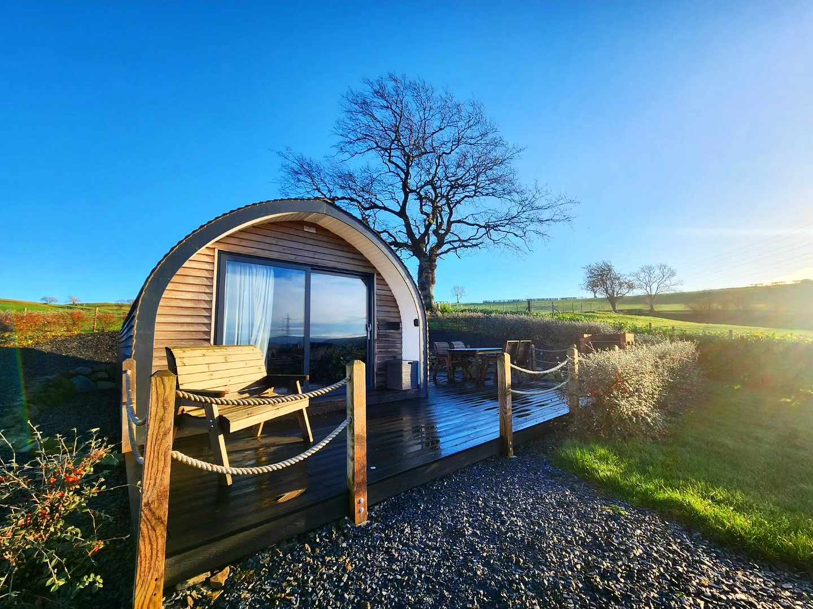
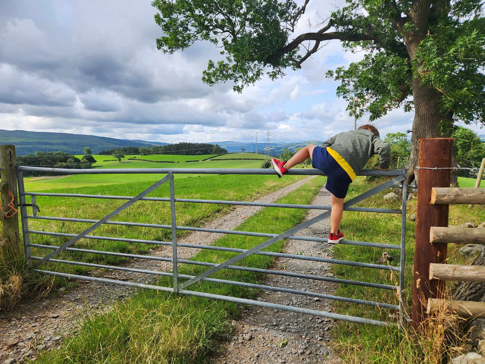

We’re very much looking forward to welcoming you to Tyn Celyn for our wedding celebration and appreciate that it may not be the easiest location for those that are travelling to get to, so below, we've tried to pull together some information that may help you. We’d also suggest visiting visitwales.com if you’re planning on staying around North Wales for a bit longer after the celebrations; there’s plenty to see and do.

Accommodation
There are several options for accommodation in the surrounding area. If you need any help with arranging accommodation, please don’t hesitate to contact us and we’ll see how we can assist.
If you’re looking for a stay in a town, we’d suggest Ruthin, which is around 11 miles from Tyn Celyn. Nestled in the twisting Clwydian hills in the northeast of Wales, Ruthin is packed full of Welsh history, and you will have access to all everyday needs including a supermarket, pharmacy, pubs and restaurants etc. It's probably the best option if you’re not looking to rent a car.
If you’re looking for the full rural getaway, there are plenty of self-catering cottages, luxury glamping pods and houses available for rent in the locality of Tyn Celyn. If you do choose this option, we suggest that having a car to be able to go to the shops etc. would be the best option.
When searching accommodation in the area, please use post code LL21 9DE or Gwyddelwern/Corwen as your location.
If you’re looking to rent as a larger group, we do have some contacts in the area where we may be able to help you, so again, if you have any questions or would like us to help with this, please give us a shout.
There is an opportunity to stay right next door to the marquee. If you’d like to bring a tent or caravan, please let us know in advance and we can ensure there’s space for you.
Getting here

For the night before, and on the day of the wedding celebration, we’ll be looking to arrange shared travel from Ruthin, and will look to assist people staying in rented accommodation in the vicinity, therefore there’s no need to worry about getting to and from the celebrations, just let us know where you’re staying, and we’ll help with the rest.
Depending on your chosen accommodation, there will be advice on how to get there on their websites etc. but as a general overview of options for getting to tyn Celyn and the surrounding areas, below is what we would recommend.
By Car
Post Code LL21 9DE. There will be signs to bring you from the main road to the marquee, where there will also be plenty of parking.
By Rail
The nearest station is Wrexham General. From the station there are options of taxis or busses to get to your accommodation. We can help you with this if you let us know your intentions with train times etc.
By Air
The nearest airports are Manchester and Liverpool. If you are flying in, please let us know which flights you will be taking, and we will help you with arranging onward travel. Our recommendation is to hire a car as tha will be the easiest option to get to your accommodation, however if several groups are arriving on the same flights, we can help with arranging onward travel, so please just let us know.